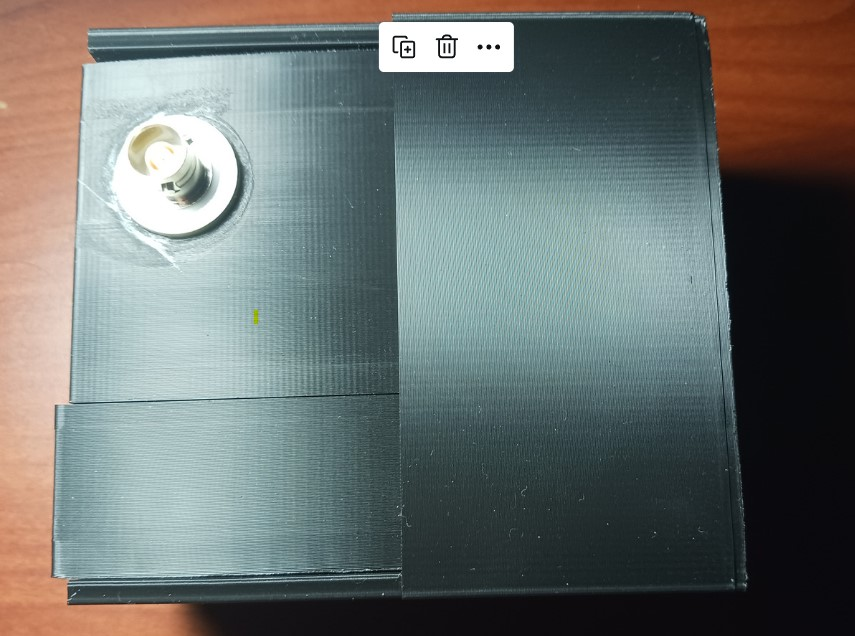

CymSTAR Embedded MIL-STD-1553
December 7, 2022
Bradlee Harrison (Software), Garret Meidl (Software), Logan Butcher (Hardware), and Matt Bugler (Project Manager)
In this capstone project collaborated with CymSTAR , an embedded system was developed to function as a MIL-STD-1553 Bus Monitor and Remote Terminal. This was achieved by controlling a HI-1575 transceiver chip using C-language firmware and transmiting it over ethernet using a Python implementation of a TCP-IP connection.

Introduction
Using our BeagleBone Black 1553 Cape, we implement an interface between Ethernet and MIL-STD-1553 with Bus Monitor (BM) functionality and propose a framework for Remote Terminal (RT) functionality.
The cape's hardware interface controls a HI-1575 MIL-STD-1553 smart transceiver and encoder/decoder. After interfacing with the MIL-STD-1553 bus data from the HI-1575 chip, we process the messages received based on our control setup (Bus Monitor or Remote Terminal).
Workflow
In Bus Monitor mode, all words received on the bus connected to the HI-1575 chip will be placed into memory and transmitted over ethernet to the host computer.
In Remote Terminal mode, the BeagleBone Black 1553 Cape would be configured over ethernet to receive and transmit on the 1553 bus based on a configurable Remote Terminal address, configurable Remote Terminal subaddresses, and configurable transmit data words for each subaddress.
During Remote Terminal mode, in the case of a valid command word received, the BeagleBone Black 1553 Cape should respond with a valid status word on the 1553 bus. Data words from the 1553 bus will be stored and sent over ethernet if the command word sent corresponds to the valid Remote Terminal address and a valid Remote Terminal receive subaddress. The BeagleBone Black will respond with transmit data words if requested by a command word with a valid Remote Terminal address and a valid Remote Terminal transmit subaddress.
Materials Used
- BeagleBone Black
- HI-1575 Chip
- PCB Cape
- 3D-Printed Case
- Mini USB Connector
- RJ45 Ethernet Connector
- 1553 Triaxial Connectors
- 1553 Bus Analyzer
- Host Computer with Ethernet Port
BeagleBone Black
HI-1575 PCB Cape and Case
Mini USB Connector
RJ 45 Ethernet Connector
1553 Triaxial Connectors
1553 Bus Analyzer
Firmware Development
With the system design in place, firmware for the BeagleBone Black was developed in C and Python to control the HI-1575 chip. The firmware was responsible for interpreting incoming messages, performing necessary actions, and generating responses.
Testing and Verification
The final stage was testing and verification. Here, the embedded system was connected to a MIL-STD-1553 bus analyzer and its performance as a bus monitor and remote terminal was assessed.